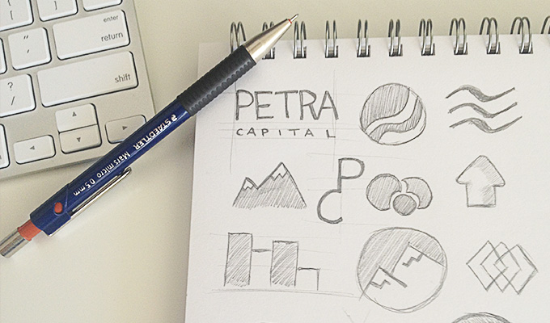
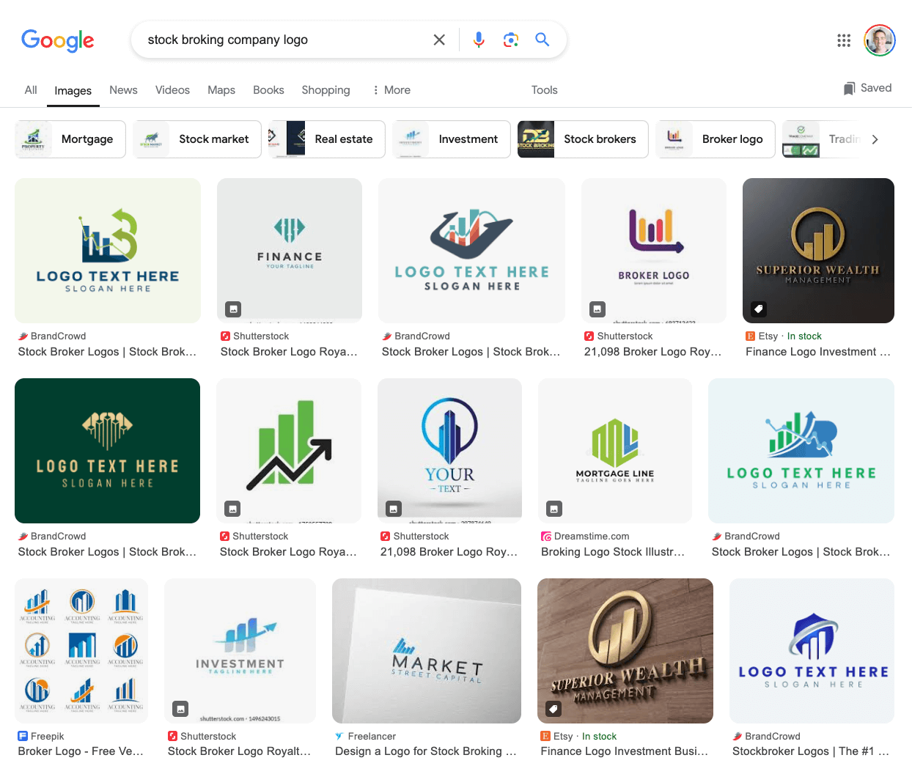

How to design a logo – a step by step guide
A logical step by step logo design process to design any type of logo in minutes not hours.

Designing a logo can be very time consuming, as it is often quite difficult to come up with logo design ideas that match our clients’ requirements. There are so many different elements you need to consider when designing a logo including colour, typography, balance and symbolism to name a few. So where do you start?
Today I’ll show you a step by step process for how to design a logo. It should add some logic and structure to the very creative and sometimes haphazard task of designing a logo.
How to design a logo
So you’ve just finished talking to your client about the new brand they want you to create. As an example let’s say that your client is a stock broking firm called “Petra Capital” and they are looking for a clean and corporate logo design which will give their firm a professional look and feel. We’ll get started on designing their new logo using this systematic logo design process.
Step 1: Conduct logo design research
First thing’s first, we need to do some background research. Do a Google search to find your client’s competitors and have a look at their branding to get a feel for the style of logos used. It’s fine to be inspired by competitors but we want to make sure that our client’s logo design is unique, so that it stands out from the others in some way.

It’s also important to do some background research on your client’s business. I actually found out that Petra Capital specialise in mining stocks and that the word “Petra” means “rock” in Greek. These are interesting facts that we can incorporate into the logo design.
Step 2: Generate logo design ideas
Once we’ve done some research and have a pretty good feel for what’s needed, we can create what’s called a “morphological matrix” to help us brainstorm ideas. This is my secret weapon when it comes to logo design. It’s a very powerful way to organise your thoughts and merge them together to create clever concepts. Mind maps are also useful to get your creative juices flowing.
A morphological matrix is basically a table with different logo design elements in the left hand column and your ideas for each of them on the right. Try to come up with as many ideas, symbols, and concepts as possible. The following example is a morphological matrix I created for our example client. I’ve circled the key ideas that I’d like to incorporate into the design.

Since the client is a stockbroking firm specialising in mining, I’ve decided to merge the mountains symbolism with a line chart that represents stock trends. Remember, one of the main goals of logo design is recognition, so we need to create a unique symbol that people will remember.
Step 3: Decide on the type of logo
Now that we’ve got some ideas in mind it’s time to figure out what type of logo is most appropriate for our client. There are three basic types of logos: Illustrative, Iconic and Typographic.
Illustrative logo
Illustrative logos are generally quite complex and graphically heavy and thus are usually not suitable for corporate logos. Due to their graphical complexity we need to also make sure that they scale down nicely. Here are some examples of illustrative logo designs.

Iconic logo
Iconic logos consist of a symbol placed next to the logo text. These types of logos are especially powerful, as they have a focus on strong typography while also giving the logo a unique look and feel with the use of symbols. Iconic logos are also quite versatile as you can use the symbol on its own in certain cases too.

Typographic logo
Typographic logos are the most traditional and simple types of logos consisting of typography only. These logos rely heavily on typographic style and are usually quite strong and bold. These logos are often used in more conservative and corporate industries such as finance and law.

Step 4: Sketch logo design ideas
Let’s go with an iconic logo for our example client. We’ll use the ideas we came up with in our morphological matrix earlier. Now we’re ready to start sketching our logo in black and white. It’s important for a logo design to work well in black and white, at both a large and small size, to ensure that it’s versatile enough to be stamped onto a myriad of promotional media . Your logo design generally shouldn’t rely on fancy special effects or gradients to define its shape. I usually steer clear of any visual effects and simply use flat colours.
You can sketch out your concepts on paper or on the computer, whichever works for you. Don’t over complicate your concept and steer clear of design trends to ensure your logo stands the test of time. Try to also keep balance in mind to ensure that the logo is weighted equally on both sides. Flip it upside down to test that it’s balanced.
Here are some of my initial sketches for our logo symbol. We don’t need to worry too much about the details at this stage, as we can polish it up later.

Step 5: Decide on typography
The typeface you choose for your logo design is super important, as it generally makes up a large part of the design. Every typeface has a personality and we need to make sure that it reflects that of the business. Try not to use too many fonts in your logo design, as this could create an overly complex and unbalanced look and feel, one or two fonts is ideal.
If you want to ensure that your typeface is unique, you can create your own or simply start with an existing one and change it to suit your needs. Search Free Fonts is a great resource to find the fonts you’re looking for. I’ve also put together a list of my favourite free typefaces for UI design if you’re interested.
Step 6: Define the logo colour scheme
Colour is a very important part of a brand, as it very quickly conveys meaning and emotion. If you’ve read about colour psychology, you know that colours make people feel a certain way. For example, green is often associated with nature, growth, and success. Yellow is often thought to convey happiness, warmth, and positivity.
Universal colour meanings sound nice in theory, but in practice, colour affects each of us differently for the following reasons:
- Colours have different meanings in different cultures.
- Your feelings about certain colours are based on your own personal experiences and preferences.
- There are different types of colour blindness that affect how people see colours.
- Our perception of colour is affected by surrounding colours, shapes, typography, and imagery.
- One colour has many different tints, shades, and tones, each of which has its own associations.
Use colour psychology as a loose guideline. Test the brand colour on users to make sure it’s suitable. Try to choose a distinctive colour to help the brand stand out. Here’s the colour scheme I came up with for our example stock broking client:
- Blue (secure, success, power).
- Green (money, fresh, crisp).
- Black (serious, bold, classic).

Step 7: Put it all together
We’ve planned out all of our logo elements, now it’s time for the easy part, creating it. There are a few basic logo design principles to keep in mind when creating your logo. Make sure that you create your logo as a vector file using software such as Adobe Illustrator. Vector images can be scaled to any size without losing quality. Use CMYK colour mode if you’re planning on printing the logo. Colour mode can be set when you create your new file in Illustrator.
Once you’ve finished creating your logo, it’s also a good idea to outline the text. The text will no longer be editable, but if another designer or printing service opens your file and doesn’t have your font installed on their computer, they’ll still be able to view and print your logo.

I hope this systematic approach on how to design a logo has been helpful. Now it’s time to show your client. Fingers crossed they like it and don’t ask you to make it bigger.